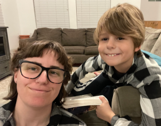

Ugh, poetry. Sometimes I enjoy it. Often times, not. Certainly not my calling:
Are these words enough?
Surely they will suffice
I'd like a sandwich
I like spending time with my family. My husband and son are my two favorite people. My husband is a software developer, so he gets really excited about me learning what he mostly already knows. He has asked for all my projects so that he can do them as well to brush up on his front-end knowledge since he works on mostly middle and back-end at his current job. My son is ten years old and a voracious reader. His favorite series is the Pseudononymous Bosch Secret series. He also quite likes Brandon Sanderson's Alcatraz and the Evil Librarians and Lemony Snicket's Series of Unfortunate Events. He wants to be a scientist when he gets older and is working on his math skills so that he won't miss any opportunities (he made me write that part). We enjoy hiking together, watching old movies and trying new foods.
I enjoy reading. I don't have a favorite genre but tend to enjoy fantasy, science fiction and classics. I am abysmal at describing the plot of the books I have read, partially because my memory isn't very good in general and partially because the parts of the books that are memorable to me aren't the parts that many other people remember. A friend of mine used to ask me to describe books or movies that we had both read/seen just to see if she could recognize the parts that I described as the plot. I almost feel bad for all my former English teachers/professors. Almost. Right now I am reading Dungeon Crawler Carl and so far I am enjoying it quite a bit: its essentially Dungeons and Dragons and the Hunger Games if they were written by a nerdy dudebro. Carl must survive with no pants or shoes in a D&D party with his ex's cat. Princess Donut (the cat) has much better stats and is the party leader.
I also enjoy cooking. My son plans to help in the kitchen this summer and wants to learn to cook. His favorite food is creme brulee and while I think we are a ways off him being able to prepare that one, he has to start somewhere. At present, he is convinced that any interactions with the stove will result in maiming and death.
| Monday | Tuesday | Wednesday | Thursday | Friday | |
|---|---|---|---|---|---|
| 10:00 | Classroom volunteer (M's Elementary) | ||||
| 10:30 | |||||
| 11:00 | |||||
| 11:30 | Commute | Commute | Operating systems | ||
| 12:00 | Human factors | Human factors | |||
| 12:30 | |||||
| 1:00 | |||||
| 1:30 | Commute | Math lab | Commute | Math lab | |
| 2:00 | Calculus | ||||
| 2:30 | |||||
| 3:00 | Software eng | Math lab | Software eng | Mathlab | |
| 3:30 | Commute | Commute | Commute | ||
| 4:00 | Rec league | ||||
| 4:30 | Java dev | Java dev | |||
| 5:00 | |||||
| 5:30 | |||||
| 6:00 | Commute | Commute | |||